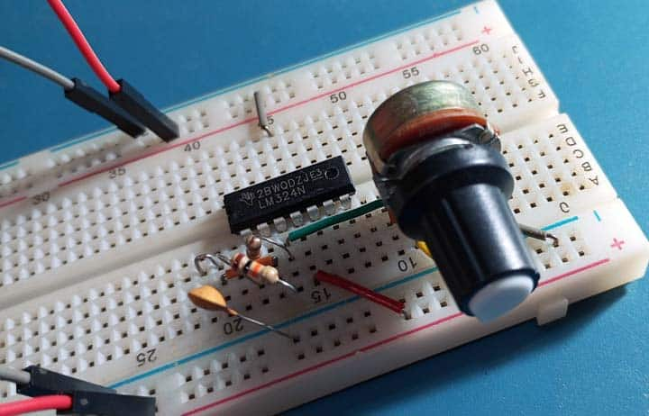

Embedded Systemen

ij het vak sensoren kregen we te maken met een aantal kleinere componenten zoals: een breadbord, weerstandjes en op-amp's die we dan gebruikte om een versterkerschakeling te bouwen met behulp van een operationele versterker. Verdere info volgt binnenkort.
Terug naar portfolio